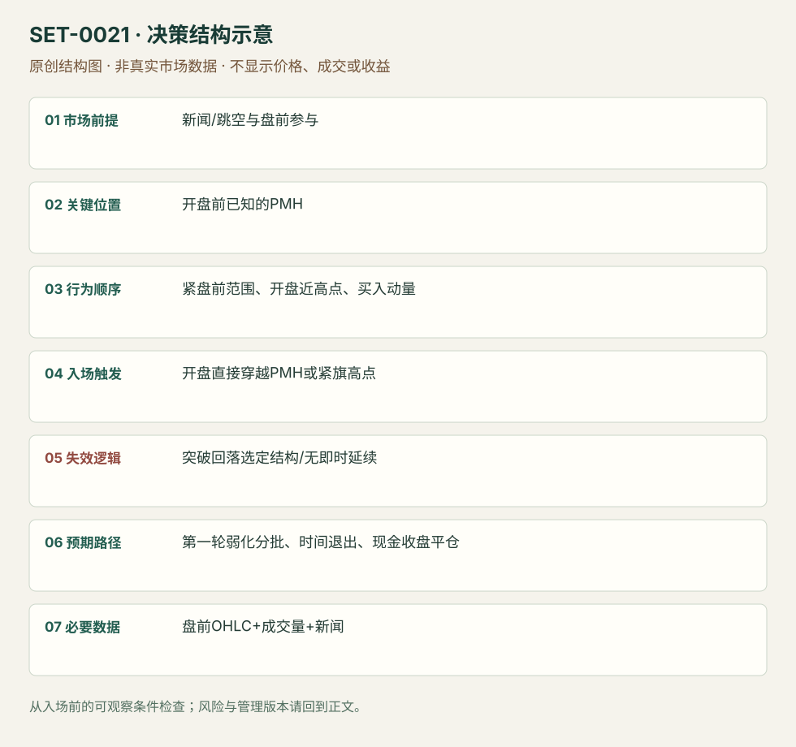

盘前高点的开盘动量突破
Gap and Go / Pre-market High Break · SET-0021 · reviewed · v1.0.0
盈利证据：not_established。审查范围与来源版本见第13节；未知字段保留缺失原因。
1. 名称与快速概览
带催化和盘前参与的股票，在现金开盘接近盘前高点时突破该高点，捕捉最早的一轮动量。参考高点在 09:30 前固定，和先等完整五分钟区间的 ORB 有不同等待条件。
记录口径：PA core；必要数据 OHLC、volume、premarket、news。名称性质：编辑性描述名，英文保留来源术语以便检索。reviewed 只表示本条规则与证据记录审查通过，盈利状态为 not_established。
2. 本质与行为假说
假说是新关注在开盘集中成交，盘前卖压被持续买入越过。低流通股或大 gap 是来源的选股条件，不能单独替代价格和成交触发，也不能证明空头实际被挤压。
3. 适用市场与环境
Warrior 版本偏价低、较小流通股、有新闻和显著跳空；SAI 偏紧盘前范围。流动性不足、价差过大或开盘跳跃过高时，机会和可执行性可能冲突。
来源实用市场：美国个股。
Session：美股/ES现金参考段 09:30–16:00 America/New_York；收盘前平仓。期货夜盘单独建背景，不将其并入开盘区间。
跨市场：本版不主张已经验证的跨市场迁移；更换市场必须重定数据来源、流动性与session。
4. 出现前的观察清单
查新闻原始发布时间与内容；在开盘前锁定 PMH、PML、近端小旗低点。选股阈值分版本：Warrior 最低 gap 5%、偏好20%和较低流通股；SAI 总清单1.5%与正文2%有差异，不能混成唯一标准。
5. 形成过程与状态转换
新催化/跳空 → 盘前形成紧范围 → 开盘近 PMH → 主动买入扩大成交并穿越高点 → 能继续向上才管理持有。无突破或冲过即回落属于未成立/失败。
6. Entry trigger 与执行方式
Warrior 核心是突破 PMH 或紧旗上沿进入，要求很快工作；SAI 为动量推过 PMH。预置 stop-entry 可能在跳价处成交，主动成交则须记录追价距离，不能假设都在水平线上成交。
7. Invalidation 与止损逻辑
结构止损用选定旗低/PMH失守；SAI 另有 PMH、VWAP、LOD 中选定水平且等1分钟收盘的版。收盘确认和硬止损的尾部风险不同，不能事后任选最宽者。Warrior 无延续约数分钟便撤，属于时间失效。
8. Exit、target 与 trade management
冲过高点后第一段衰弱可部分退出；剩余跟短线转弱。Warrior 不工作的交易快速撤；本库日内版不得因股票故事好而变成隔夜持仓。
9. 常见 variations
在 PMH 前小旗提前入是更早版本，标明尚未突破；高流通股或不同 gap 阈值是选股版本。盘前高突破与一般 Gap and Go 子结构归一个主条目。
10. 失败方式与不交易条件
PMH 上方立刻被拒；盘前已长时间趋势耗尽；开盘价离触发太远；价差和停牌风险使原定止损不能实现；把只有开盘红绿首棒的方向过滤混入本条。
11. 与相近 setups 的区别
12. 图表与案例解读
已看 SAI 第21页 BYND：盘前多次紧贴黄线，现金开盘量柱明显增加。箭头是作者示例标记，没有订单成交证明；图上年月日字段不足以唯一核实案例日期。
- [VIS-000022] 来源PDF第21页图表；定位：PDF页序 21。BYND 左5分钟右1分钟，盘前黄线范围在开盘时被绿棒突破；橙箭头提示后续衰弱。 验证：chart_viewed_pdf_page。
本地原创示意（VIS-000078，非真实市场数据）：

小屏阅读可打开原尺寸示意图并缩放。

此图用于对照识别顺序与风险定义；不计入真实案例覆盖率。
视觉材料元数据与查看范围
- VIS-000022 · real_source_chart / structure_and_trigger / chart_viewed_pdf_page
品种：BYND；日期：未知/不适用；周期：5分钟/1分钟；时区：未知/不适用
日期未在画面中核对；时区未在画面中核对；作者示例；不是独立成交审计 - VIS-000078 · synthetic_structure_diagram / illustration_only / generated_not_market_evidence
品种：未知/不适用；日期：未知/不适用；周期：未知/不适用；时区：未知/不适用
无真实品种、日期或价格：这是结构示意
13. 证据、分歧与未知项
两个实践家族解释同一开盘行为，但不是统一参数策略的独立回测。来源给方向性偏好和画面，不提供完整所有交易清单。
- [EVD-000038] Ross Cameron / Warrior Trading，《Technical Analysis Series》，SRC-0025；定位：Technical Analysis Series PDF页序3–4。支持：Gap and Go 先查催化、流通股与盘前高点，开盘突破盘前高点或旗形，不能延续则迅速退出。
- [EVD-000039] SAI Trades，《My Experience: Trading the Open Playbook》，SRC-0013；定位：PDF页序10及21 PM High Push and Break。支持：紧盘前区间、开盘近盘前高、进入高点的动量；1分钟收盘止损版本和冲高见弱减仓。
14. 可用于复盘的检查表
- ☐ 下单前的前提可核对：新闻/跳空与盘前参与
- ☐ 事前标记位置：开盘前已知的PMH
- ☐ 行为按顺序出现：紧盘前范围、开盘近高点、买入动量
- ☐ 实际触发符合选定版本：开盘直接穿越PMH或紧旗高点
- ☐ 事先写明本次否定条件：突破回落选定结构/无即时延续
- ☐ 目标/路径只用当时已知信息：第一轮弱化分批、时间退出、现金收盘平仓
- ☐ 数据满足 盘前OHLC+成交量+新闻；记录时间、点差、滑点、队列和未成交
- ☐ 记录截止平仓及规则偏离；正常亏损不事后改成“未成立”
15. 后续验证问题
开盘追价相对 PMH 多远后失去期望空间？停牌重开是否应另建状态？同一价差下，大 gap 的实际可成交样本怎样？
双向相关导航
- SET-0002 五分钟开盘区间突破 0002 必须等待第一根5分钟棒结束；本条的边界在盘前已知并可在开盘立刻触发。
- SET-0009 强推进后的首次微型回撤 0009 是已发生强驱动后的第一微回调，本条须穿越盘前边界。
- SET-0026 历史高成交日 VWAP 压力与量能断崖 0021 开盘强买量突破PMH，本条寻找这类动量失败后的历史压力拒绝，但两者不能只因做多/做空而算同一交易。